Lag i den Svenska Hockey Ligan
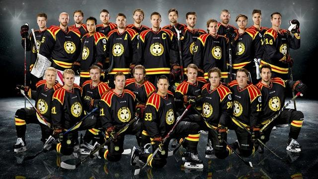
- Grundad
- 1912
- Svensak mästare
- 1964, 1966
- 1967, 1968
- 1970, 1971
- 1972, 1976
- 1977, 1980
- 1993, 1999
- 2012
 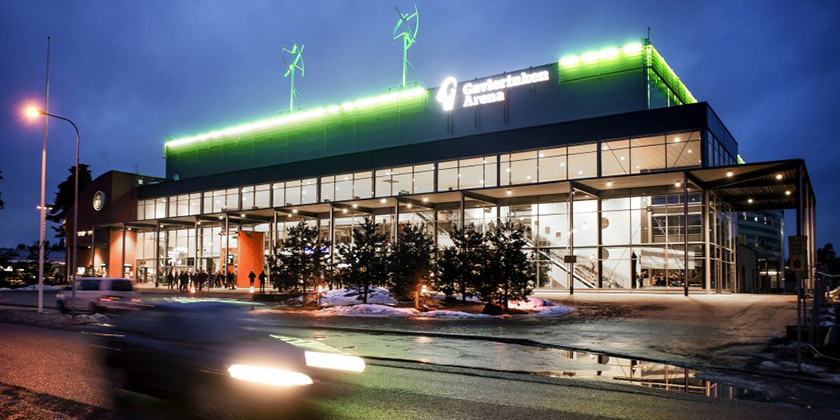
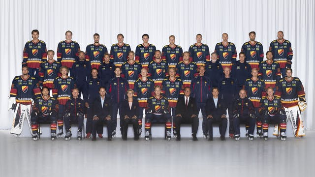
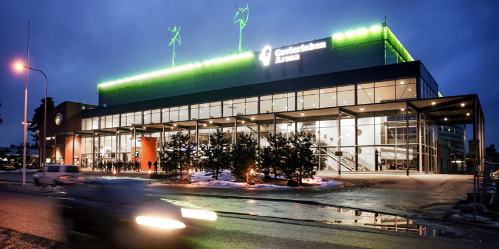
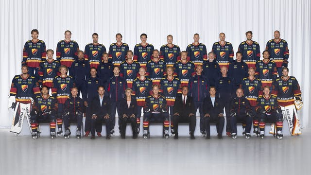
- Grundad
- 1891
- Svensak mästare
- 1926, 1950
- 1954, 1955
- 1958, 1959
- 1960, 1961
- 1962, 1963
- 1983, 1989
- 1990 , 1991
- 2000, 2001
 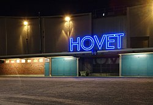
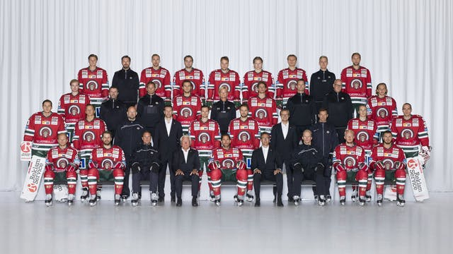
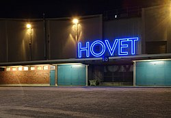
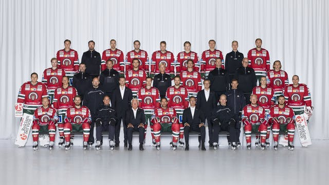
- Grundad
- 1944
- Svensak mästare
- 1965, 2003
- 2005, 2016
- 2019
 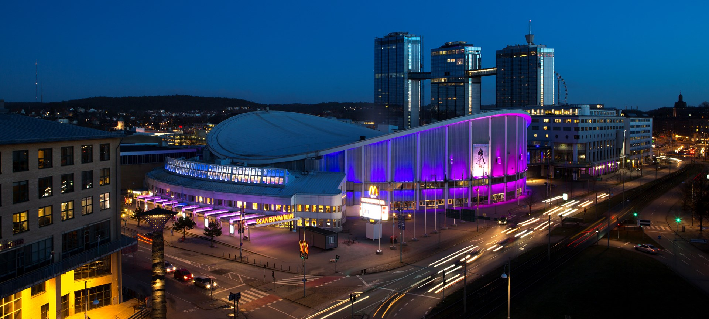
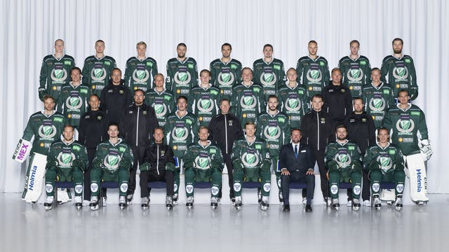
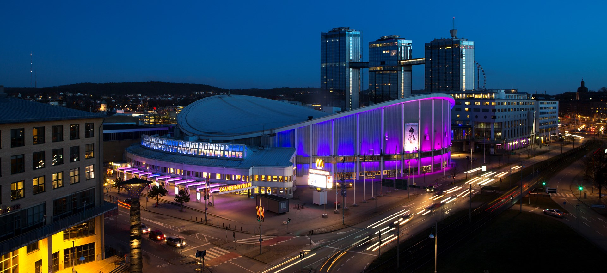
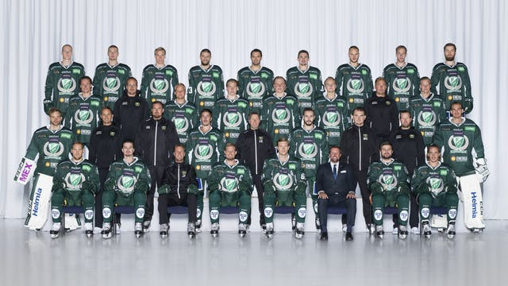
- Grundad
- 1932
- Svensak mästare
- 1981, 1986
- 1988, 1997
- 1998, 2002
- 2006, 2009
- 2011
 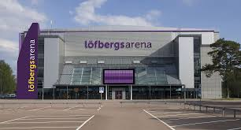
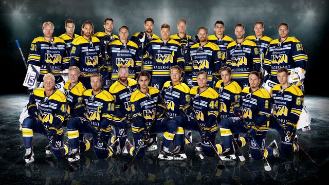
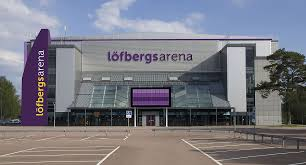
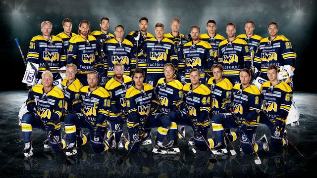
- Grundad
- 1971
- Svensak mästare
- 1995, 2004
- 2008, 2010
- 2017
 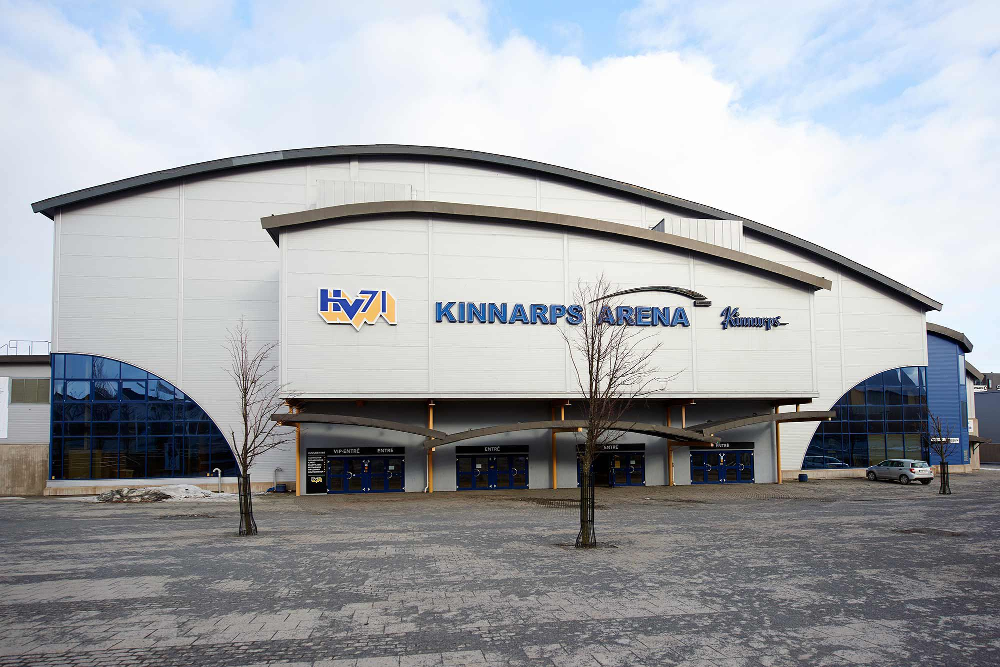
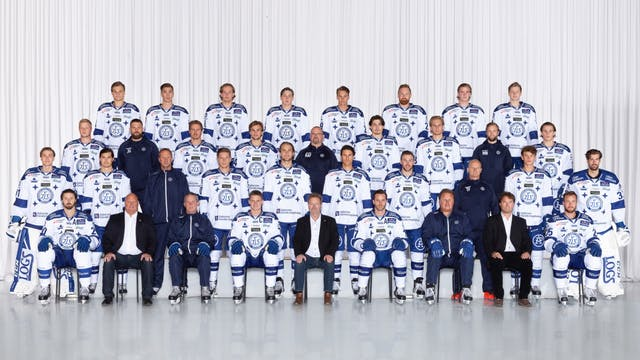
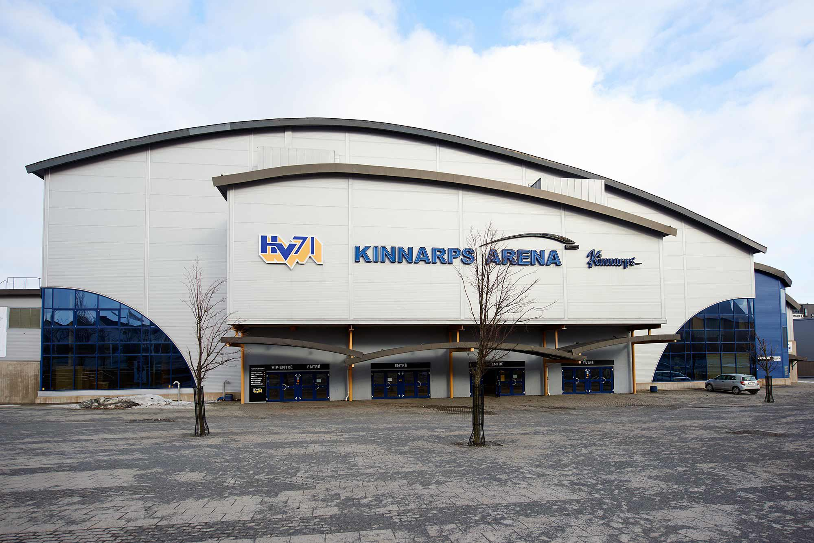
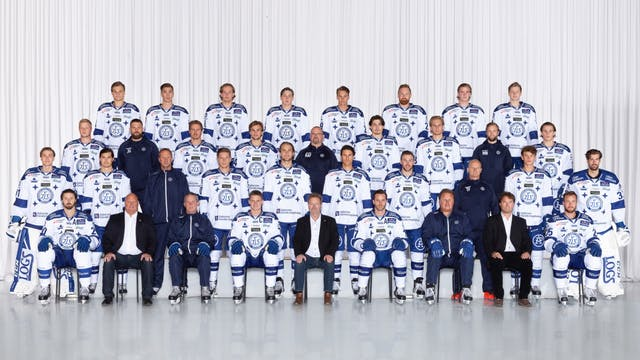
- Grundad
- 1919
- Svensak mästare
- 1969, 1973
- 1974, 1975
 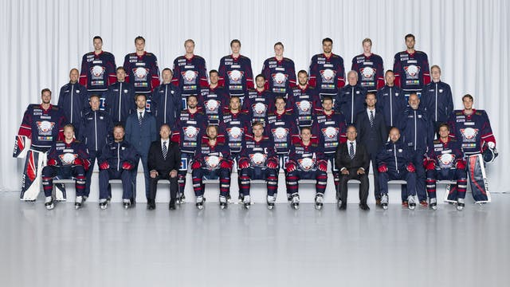
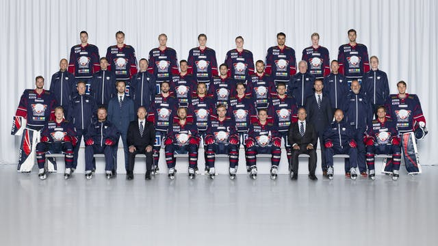
- Grundad
- 1976
- Svensak mästare
- 0 gånger
 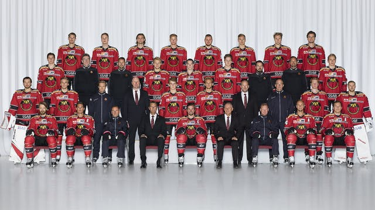
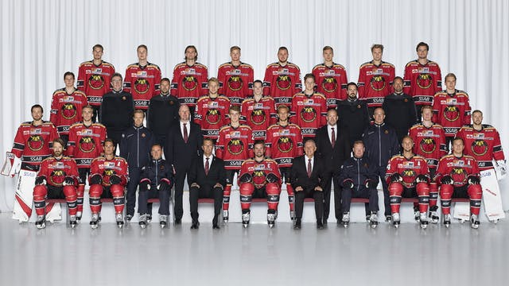
- Grundad
- 1977
- Svensak mästare
- 1996

 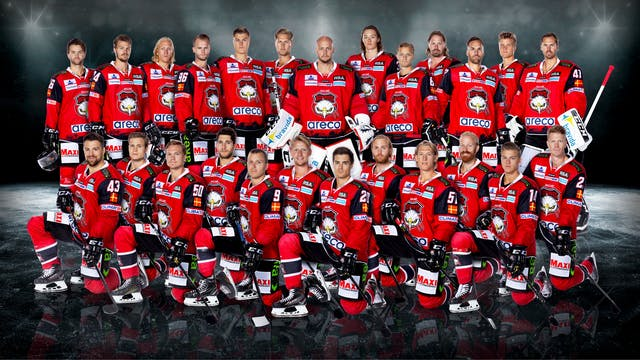
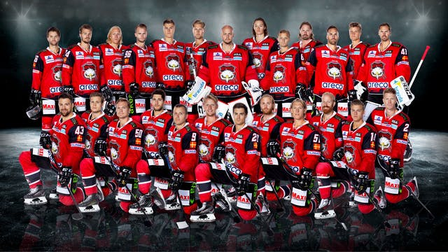
- Grundad
- 1972
- Svensak mästare
- 1992, 1994

 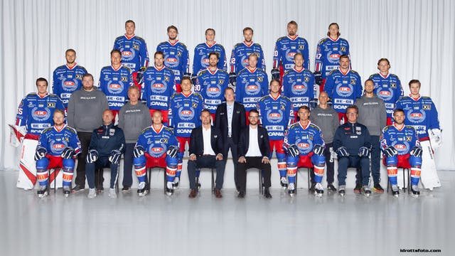
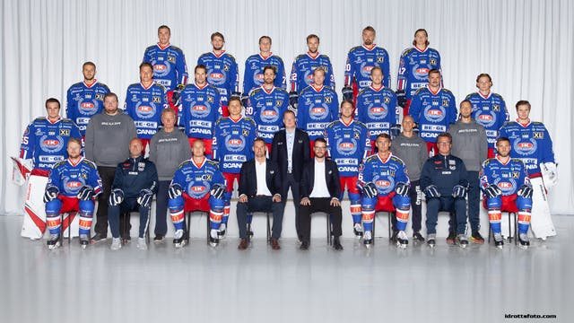
- Grundad
- 1970
- Svensak mästare
- 0 gånger

 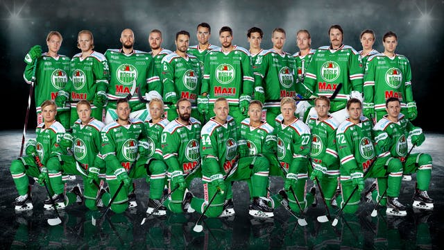
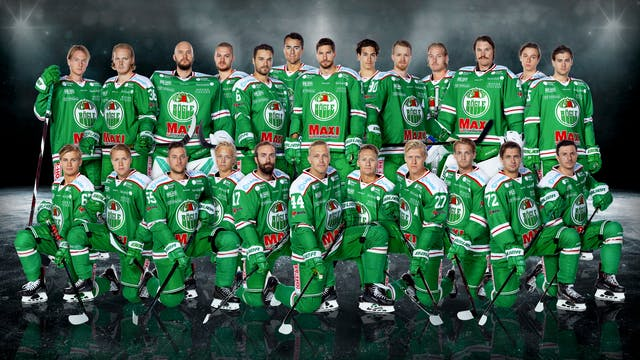
- Grundad
- 1932
- Svensak mästare
- 0 gånger
 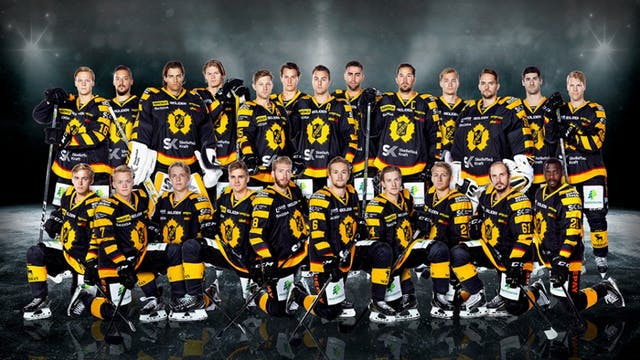
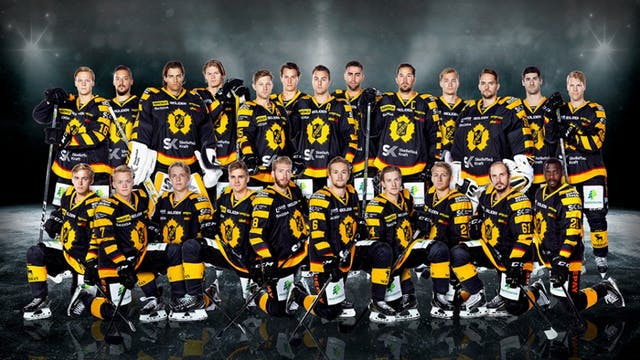
- Grundad
- 1921
- Svensak mästare
- 1978, 2013
- 2014

 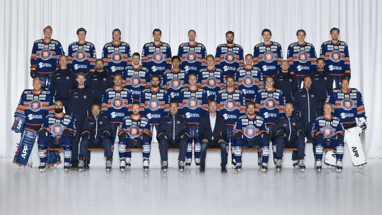
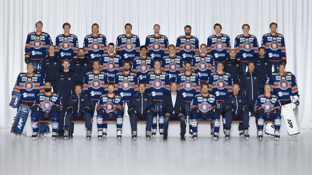
- Grundad
- 1997
- Svensak mästare
- 2015, 2018
 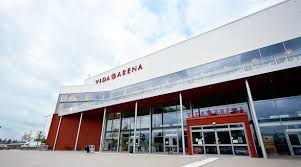
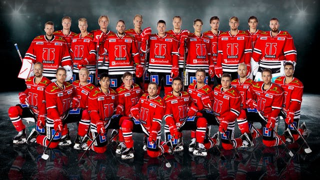
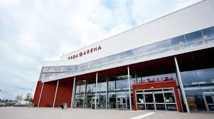
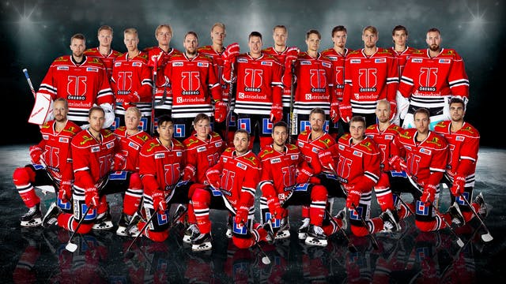
- Grundad
- 1990
- Svensak mästare
- 0 gånger
 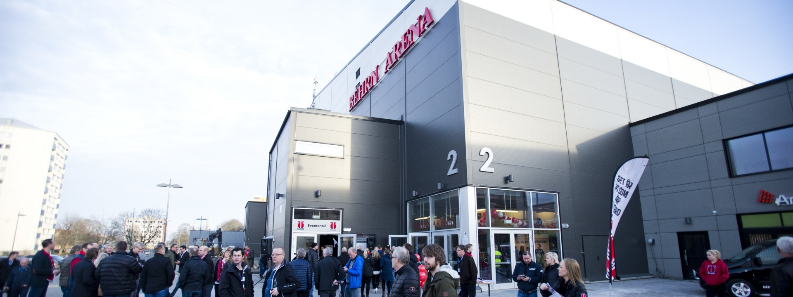
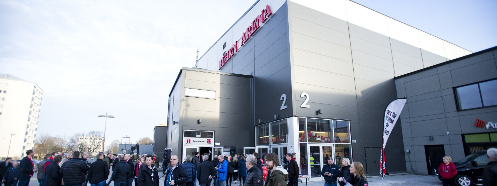